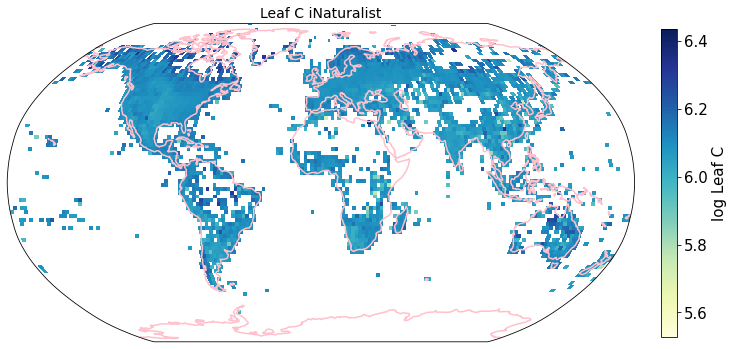
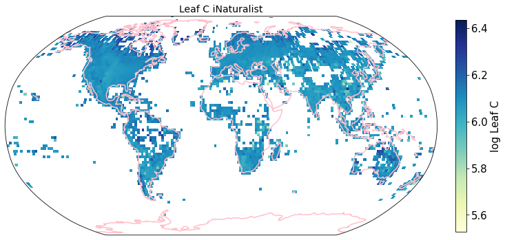
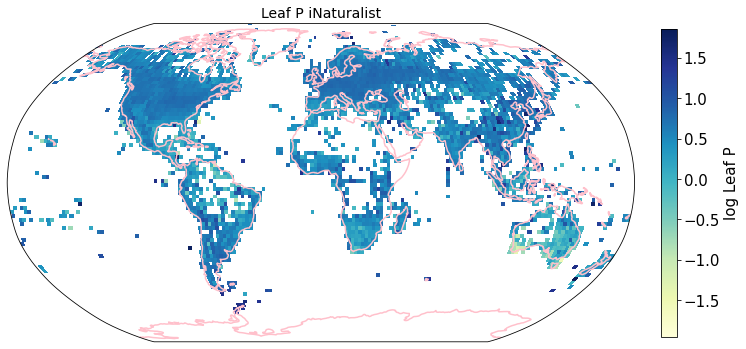
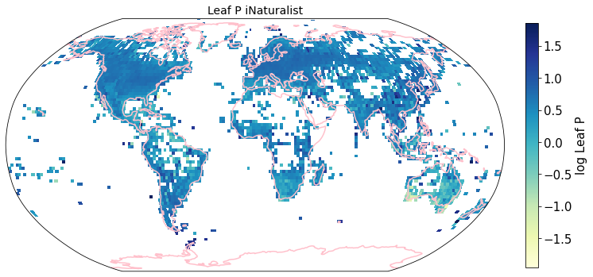
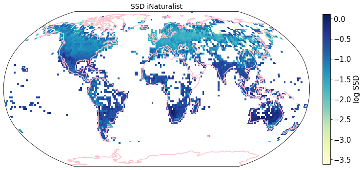
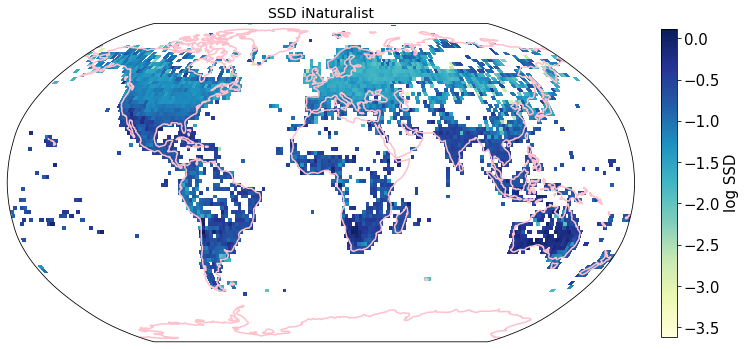

Compare sPlotOpen and iNaturalist trait maps
Contents
Compare sPlotOpen and iNaturalist trait maps¶
We will create trait maps with the iNaturalist observation data and evaluate the maps using the sPlotOpen data.
This section covers:
Load Data
Visualizing the trait maps - a first look
Grid mean trait values at different resolutions
Calculate weighted r
Determine slope of correlation
Plot correlation plots at 2 degree resolution
# packages
import os
import pandas as pd
import numpy as np
import matplotlib.pyplot as plt
import seaborn as sns
import matplotlib.ticker as ticker
from matplotlib.colors import LogNorm, Normalize
from matplotlib.ticker import MaxNLocator
import cartopy.crs as ccrs
import cartopy.feature as cfeature
from matplotlib.colors import BoundaryNorm
import geopandas as gpd
from pyproj import Proj # allows for different projections
from shapely.geometry import shape # for calculating areas
Load Data¶
iNat_TRY = pd.read_csv("iNat_TRY_log.csv")
iNat_TRY.head(2)
| gbifID | scientificName | decimalLatitude | decimalLongitude | eventDate | dateIdentified | Dispersal unit length | Leaf Area | SLA | Leaf C | ... | Leaf delta15N | Leaf N P ratio | Leaf P | Plant Height | Seed mass | Seed length | Seeds per rep. unit | Stem conduit density | SSD | Conduit element length | |
|---|---|---|---|---|---|---|---|---|---|---|---|---|---|---|---|---|---|---|---|---|---|
| 0 | 1229615436 | Commelina communis | 35.987483 | -79.057546 | 2013-07-07T00:00:00 | 2013-07-07T20:33:11 | NaN | NaN | NaN | NaN | ... | NaN | 2.5362 | 0.536493 | NaN | 2.13771 | NaN | NaN | NaN | NaN | NaN |
| 1 | 3384000233 | Commelina communis | 42.093762 | -75.923660 | 2021-08-23T13:06:06 | 2021-09-17T21:15:37 | NaN | NaN | NaN | NaN | ... | NaN | 2.5362 | 0.536493 | NaN | 2.13771 | NaN | NaN | NaN | NaN | NaN |
2 rows × 24 columns
sPlot = pd.read_csv("sPlotOpen/cwm_loc.csv")
sPlot.head(2)
| PlotObservationID | TraitCoverage_cover | Species_richness | TraitCoverage_pa | Leaf Area | SSD | SLA | Leaf C | Leaf N per mass | Leaf P | ... | Height_shrubs_lowest | Height_herbs_average | Height_herbs_lowest | Height_herbs_highest | SoilClim_PC1 | SoilClim_PC2 | Resample_1 | Resample_2 | Resample_3 | Resample_1_consensus | |
|---|---|---|---|---|---|---|---|---|---|---|---|---|---|---|---|---|---|---|---|---|---|
| 0 | 16 | 0.277778 | 3 | 0.333333 | 3.678311 | -1.047293 | 2.890748 | 6.128157 | 2.873263 | 1.114036 | ... | NaN | NaN | NaN | NaN | -3.66 | 0.546 | True | False | False | True |
| 1 | 17 | 0.038462 | 2 | 0.500000 | 3.678311 | -1.047293 | 2.890748 | 6.128157 | 2.873263 | 1.114036 | ... | NaN | NaN | NaN | NaN | -3.66 | 0.546 | True | False | False | True |
2 rows × 86 columns
Visualize trait maps¶
def plot_grid(df, lon, lat, variable, dataset_name, deg, log=True):
plt.rcParams.update({'font.size': 15})
# define raster shape for plotting
step = int((360/deg) + 1)
bins_x = np.linspace(-180,180,step)
bins_y= np.linspace(-90,90,int(((step - 1)/2)+1))
df['x_bin'] = pd.cut(df[lon], bins=bins_x)
df['y_bin'] = pd.cut(df[lat], bins=bins_y)
df['x_bin'] = df['x_bin'].apply(lambda x: x.left)
df['y_bin'] = df['y_bin'].apply(lambda x: x.left)
grouped_df = df.groupby(['x_bin', 'y_bin'], as_index=False)[variable].mean()
raster = grouped_df.pivot('y_bin', 'x_bin', variable)
# data format
data_crs = ccrs.PlateCarree()
#for colorbar
levels = MaxNLocator(nbins=15).tick_values(grouped_df[variable].min(), grouped_df[variable].max())
cmap = plt.get_cmap('YlGnBu') # colormap
norm = BoundaryNorm(levels, ncolors=cmap.N, clip=True)
im_ratio = raster.shape[0]/raster.shape[1] # for size of colorbar
#create base plot of a world map
ax = fig.add_subplot(1, 1, 1, projection=ccrs.Robinson()) # I used the PlateCarree projection from cartopy
ax.set_global()
#add grid with values
im = ax.pcolormesh(bins_x, bins_y, raster, cmap="YlGnBu",
vmin=grouped_df[t].min(),
vmax=grouped_df[t].max(),
transform=data_crs)
#add color bar
if log==True:
label= "log " + str(t)
else:
label= str(t)
fig.colorbar(im,fraction=0.046*im_ratio, pad=0.04, label=label)
#add coastlines
ax.coastlines(resolution='110m', color='pink', linewidth=1.5)
#set title
ax.set_title( variable + ' ' + dataset_name, size=14)
To visualize the trait maps we use the custom function plot_grid().
trait = iNat_TRY.columns[6:24]
for t in trait:
fig = plt.figure(figsize=(12, 12))
filename = '../Figures/iNat_traitmap_' + t +'.pdf'
plot_grid(iNat_TRY, "decimalLongitude", "decimalLatitude",variable=t, dataset_name="iNaturalist", deg=2)
plt.savefig(filename, bbox_inches='tight')

 



 



 


Compare to maps created using R raster: Load traitmaps from geotiff data¶
from os import listdir
from os.path import isfile, join
path = "./iNaturalist_traits-main/iNat_log/"
files = [f for f in listdir(path) if isfile(join(path, f))]
files.sort()
import xarray as xr
files
['iNat_Conduit.element.length_2_ln.tif',
'iNat_Dispersal.unit.length_2_ln.tif',
'iNat_LDMC_2_ln.tif',
'iNat_Leaf.Area_2_ln.tif',
'iNat_Leaf.C_2_ln.tif',
'iNat_Leaf.N.P.ratio_2_ln.tif',
'iNat_Leaf.N.per.area_2_ln.tif',
'iNat_Leaf.N.per.mass_2_ln.tif',
'iNat_Leaf.P_2_ln.tif',
'iNat_Leaf.delta15N_2_ln.tif',
'iNat_Leaf.fresh.mass_2_ln.tif',
'iNat_Plant.Height_2_ln.tif',
'iNat_SLA_2_ln.tif',
'iNat_SSD_2_ln.tif',
'iNat_Seed.length_2_ln.tif',
'iNat_Seed.mass_2_ln.tif',
'iNat_Seeds.per.rep..unit_2_ln.tif',
'iNat_Stem.conduit.density_2_ln.tif']
def cubeFile(file):
name = file.replace(".tif","")
sr = xr.open_dataset(path + file,engine = "rasterio",chunks = 1024).sel(band = 1)
sr = sr.assign_coords({"variable":name})
return sr
da = xr.concat([cubeFile(x) for x in files],dim = "variable")
da.band_data.sel(variable = "iNat_Leaf.Area_2_ln").plot.imshow()
<matplotlib.image.AxesImage at 0x7f9f25c954c0>

Plot one band of multidimensional xarray:
fig = plt.figure(figsize=(12, 12))
axis = fig.subplots(
1, 1, subplot_kw=dict(projection=ccrs.Robinson())
)
variable = "iNat_Leaf.Area_2_ln"
im= da.band_data.sel(variable = variable).plot.pcolormesh(
ax=axis,
transform=ccrs.PlateCarree(), # this is important!
# usual xarray stuff
cbar_kwargs={"orientation": "horizontal", "shrink": 0.7},
cmap='YlGnBu',
#vmin=da.band_data.sel(variable = "iNat_Conduit.element.length").min(),
#vmax=da.band_data.sel(variable = "iNat_Conduit.element.length").max(),
#norm=LogNorm()
)
axis.coastlines(resolution='110m', color='pink', linewidth=1.5) # cartopy function
#plt.tight_layout()
<cartopy.mpl.feature_artist.FeatureArtist at 0x7f9f25d10790>

df = da.band_data.to_dataset().to_dataframe().reset_index()
df.head()
| x | y | variable | band | spatial_ref | band_data | |
|---|---|---|---|---|---|---|
| 0 | -179.0 | 89.0 | iNat_Conduit.element.length_2_ln | 1 | 0 | NaN |
| 1 | -179.0 | 89.0 | iNat_Dispersal.unit.length_2_ln | 1 | 0 | NaN |
| 2 | -179.0 | 89.0 | iNat_LDMC_2_ln | 1 | 0 | NaN |
| 3 | -179.0 | 89.0 | iNat_Leaf.Area_2_ln | 1 | 0 | NaN |
| 4 | -179.0 | 89.0 | iNat_Leaf.C_2_ln | 1 | 0 | NaN |
df_spread = df.pivot(index= ['x','y'],columns='variable',values='band_data').reset_index()
df_spread.head()
| variable | x | y | iNat_Conduit.element.length_2_ln | iNat_Dispersal.unit.length_2_ln | iNat_LDMC_2_ln | iNat_Leaf.Area_2_ln | iNat_Leaf.C_2_ln | iNat_Leaf.N.P.ratio_2_ln | iNat_Leaf.N.per.area_2_ln | iNat_Leaf.N.per.mass_2_ln | iNat_Leaf.P_2_ln | iNat_Leaf.delta15N_2_ln | iNat_Leaf.fresh.mass_2_ln | iNat_Plant.Height_2_ln | iNat_SLA_2_ln | iNat_SSD_2_ln | iNat_Seed.length_2_ln | iNat_Seed.mass_2_ln | iNat_Seeds.per.rep..unit_2_ln | iNat_Stem.conduit.density_2_ln |
|---|---|---|---|---|---|---|---|---|---|---|---|---|---|---|---|---|---|---|---|---|
| 0 | -179.0 | -89.0 | NaN | NaN | NaN | NaN | NaN | NaN | NaN | NaN | NaN | NaN | NaN | NaN | NaN | NaN | NaN | NaN | NaN | NaN |
| 1 | -179.0 | -87.0 | NaN | NaN | NaN | NaN | NaN | NaN | NaN | NaN | NaN | NaN | NaN | NaN | NaN | NaN | NaN | NaN | NaN | NaN |
| 2 | -179.0 | -85.0 | NaN | NaN | NaN | NaN | NaN | NaN | NaN | NaN | NaN | NaN | NaN | NaN | NaN | NaN | NaN | NaN | NaN | NaN |
| 3 | -179.0 | -83.0 | NaN | NaN | NaN | NaN | NaN | NaN | NaN | NaN | NaN | NaN | NaN | NaN | NaN | NaN | NaN | NaN | NaN | NaN |
| 4 | -179.0 | -81.0 | NaN | NaN | NaN | NaN | NaN | NaN | NaN | NaN | NaN | NaN | NaN | NaN | NaN | NaN | NaN | NaN | NaN | NaN |
df_spread.shape
(16200, 20)
Grid mean trait values at different resolutions¶
def global_grid_data(df, long, lat, deg, variables):
# create new dataframe to save the average value of each grid cell and variable
grouped_df = pd.DataFrame()
# convert degree into step size
step = int((360/deg) + 1)
bins_x = np.linspace(-180,180,step)
bins_y= np.linspace(-90,90,int(((step - 1)/2)+1))
# group latitude and longitude coordinates into bins
# create new columns 'x_bin' and 'y_bin'
df['x_bin'] = pd.cut(df[long], bins=bins_x)
df['y_bin'] = pd.cut(df[lat], bins=bins_y)
# raster coordinates are in center of raster cell
df['x_bin'] = df['x_bin'].apply(lambda x: ((x.left + x.right) /2) )
df['y_bin'] = df['y_bin'].apply(lambda x: ((x.left + x.right) /2) )
grouped_df = df.drop_duplicates(subset=['x_bin', 'y_bin'], keep='last')
grouped_df = grouped_df[['x_bin', 'y_bin']]
for v in variables:
sub_df = df[['y_bin', 'x_bin', v]]
grouped_v = sub_df.groupby(['x_bin', 'y_bin'], as_index=False)[v].mean()
grouped_df = pd.merge(grouped_df, grouped_v,
on= ['x_bin', 'y_bin'],
how='left')
return grouped_df
Check function at 2 degree resolution¶
To create a dataframe with all traits and the mean log trait values per cell we call global_grid_data().
deg = 2
trait = iNat_TRY.columns[6:24]
df_iNat = global_grid_data(iNat_TRY, 'decimalLongitude', 'decimalLatitude', deg, trait)
df_iNat_t = df_iNat.melt(id_vars=["x_bin", "y_bin"],
value_name="TraitValue_iNat",
var_name="Trait")
df_iNat_t
| x_bin | y_bin | Trait | TraitValue_iNat | |
|---|---|---|---|---|
| 0 | -85.0 | 5.0 | Dispersal unit length | NaN |
| 1 | -49.0 | 61.0 | Dispersal unit length | 0.893636 |
| 2 | -173.0 | 69.0 | Dispersal unit length | 0.893636 |
| 3 | 1.0 | 31.0 | Dispersal unit length | 0.388658 |
| 4 | 37.0 | 39.0 | Dispersal unit length | 1.189367 |
| ... | ... | ... | ... | ... |
| 69313 | 23.0 | -33.0 | Conduit element length | 6.299584 |
| 69314 | 147.0 | -43.0 | Conduit element length | 6.089187 |
| 69315 | -117.0 | 33.0 | Conduit element length | 5.760924 |
| 69316 | 115.0 | 23.0 | Conduit element length | 5.893173 |
| 69317 | 95.0 | 51.0 | Conduit element length | 5.461003 |
69318 rows × 4 columns
df_iNat_t['Trait'].nunique()
18
Calculate averages for different resolutions¶
We now compute these global grids for various grid sizes (in degrees) and all traits. We merge iNat and sPlot into one dataframe and save it.
deg = [4, 2, 1, 0.5, 0.25, 0.125, 0.0625]
trait = iNat_TRY.columns[6:24]
for d in deg:
df_iNat = global_grid_data(iNat_TRY, 'decimalLongitude', 'decimalLatitude', d, trait)
df_sPlot = global_grid_data(sPlot, 'Longitude', 'Latitude', d, trait)
# reshape data, so that we have only one Trait column
df_iNat_t = df_iNat.melt(id_vars=["x_bin", "y_bin"],
value_name="TraitValue_iNat",
var_name="Trait")
df_sPlot_t = df_sPlot.melt(id_vars=["x_bin", "y_bin"],
value_name="TraitValue_sPlot",
var_name="Trait")
# merge sPlot and iNat data into one dataframe
df_merged = pd.merge(df_sPlot_t, df_iNat_t, on=["x_bin", "y_bin", "Trait"] )
# keep only lines where we have a pixel in both datasets
df_merged = df_merged.dropna()
# save result to csv
filename="grid_means_" + str(d) + "_deg.csv"
df_merged.to_csv(filename, index=False)
Calculate weighted r¶
Calculate weights per grid cell area and weighted r for all traits and all grid sizes.
def lat_weights(lat_unique, deg):
from pyproj import Proj
from shapely.geometry import shape
# determine weights per grid cell based on longitude
# keep only one exemplary cell at each distance from equator
# weights per approximated area of grid size depending on distance from equator
# make dictionary
weights = dict()
for j in lat_unique:
# the four corner points of the grid cell
p1 = (0 , j+(deg/2))
p2 = (deg , j+(deg/2))
p3 = (deg, j-(deg/2))
p4 = (0, j-(deg/2))
# Calculate polygon surface area
# https://stackoverflow.com/questions/4681737/how-to-calculate-the-area-of-a-polygon-on-the-earths-surface-using-python
# Define corner points
co = {"type": "Polygon", "coordinates": [[p1,p2,p3,p4]]}
lat_1=p1[1]
lat_2=p3[1]
lat_0=(p1[1]+p3[1])/2
lon_0=deg/2
# Caveat: Connot go accross equator
value1 = abs(lat_1 + lat_2)
value2 = abs((lat_1) + abs(lat_2))
# if grid cell overlaps equator:
if value1 < value2:
lat_1=p1[1]
lat_2=0
lat_0=(p1[1]+lat_2)/2
lon_0=deg/2
# Projection equal area used: https://proj.org/operations/projections/aea.html
projection_string="+proj=aea +lat_1=" + str(lat_1) + " +lat_2=" + str(lat_2) + " +lat_0=" + str(lat_0) + " +lon_0=" + str(lon_0)
lon, lat = zip(*co['coordinates'][0])
pa = Proj(projection_string)
x, y = pa(lon, lat)
cop = {"type": "Polygon", "coordinates": [zip(x, y)]}
area = (shape(cop).area/1000000)*2
# if grid cell is on one side of equator:
else:
# Projection equal area used: https://proj.org/operations/projections/aea.html
projection_string="+proj=aea +lat_1=" + str(lat_1) + " +lat_2=" + str(lat_2) + " +lat_0=" + str(lat_0) + " +lon_0=" + str(lon_0)
lon, lat = zip(*co['coordinates'][0])
pa = Proj(projection_string)
x, y = pa(lon, lat)
cop = {"type": "Polygon", "coordinates": [zip(x, y)]}
area = (shape(cop).area/1000000)
# set coord to center of grid cell
coord = j
# map area to weights dictionary
weights[coord] = area
# convert area into proportion with area/max.area:
max_area = max(weights.values())
for key in weights.keys():
weights[key] = weights[key]/max_area
return weights
def weighted_r(df, col_1, col_2, col_lat, weights, r2=False):
# map weights to dataframe
df['Weights'] = df[col_lat].map(weights)
# calculate weighted correlation
# https://www.statsmodels.org/stable/generated/statsmodels.stats.weightstats.DescrStatsW.html
import statsmodels.api as statmod
d1 = statmod.stats.DescrStatsW( df[[col_1, col_2]], df['Weights'] )
corr = d1.corrcoef[0][1]
# optional
# calculate r2
if r2 == True:
corr = corr**2
return corr
# get trait names
filename="grid_means_" + str(2) + "_deg.csv"
raster_means = pd.read_csv(filename)
trait = raster_means["Trait"].unique()
Calculate r for all traits and a range of resolutions:
# resolutions we want to calculate r for
deg = [4, 2, 1, 0.5, 0.25, 0.125, 0.0625]
r_all = pd.DataFrame(columns=trait)
for i in deg:
import numpy as np
import statsmodels.api as statmod
# open saved raster mean files
filename="grid_means_" + str(i) + "_deg.csv"
raster_means = pd.read_csv(filename)
raster_means = raster_means[~raster_means.isin([np.nan, np.inf, -np.inf]).any(1)]
# determine weights per grid cell based on longitude
lat_unique = raster_means['y_bin'].unique()
weights = lat_weights(lat_unique, deg=i)
# initiate
r_grid = []
for t in trait:
# subset only one trait
raster_means_trait = raster_means[raster_means['Trait']==t]
# drop nan's
raster_means_trait = raster_means_trait.dropna()
# calculate weighted r
r_trait = weighted_r(raster_means_trait, "TraitValue_sPlot", "TraitValue_iNat", "y_bin", weights)
# add to trait r's
r_grid.append(r_trait)
s = pd.Series(r_grid, index=r_all.columns)
# add new series of r at a certain resolution to df
r_all = r_all.append(s, ignore_index=True)
# add resolution to r-df
r_all['Resolution'] = [4, 2, 1, 0.5, 0.25, 0.13, 0.06]
r_all
| Dispersal unit length | Leaf Area | SLA | Leaf C | LDMC | Leaf fresh mass | Leaf N per area | Leaf N per mass | Leaf delta15N | Leaf N P ratio | Leaf P | Plant Height | Seed mass | Seed length | Seeds per rep. unit | Stem conduit density | SSD | Conduit element length | Resolution | |
|---|---|---|---|---|---|---|---|---|---|---|---|---|---|---|---|---|---|---|---|
| 0 | -0.064129 | 0.648441 | 0.541325 | 0.313925 | 0.395695 | 0.675771 | 0.530652 | 0.410528 | 0.335074 | 0.402132 | 0.417266 | 0.573948 | 0.520051 | 0.227821 | 0.033105 | 0.694801 | 0.639448 | 0.360548 | 4.00 |
| 1 | -0.040254 | 0.591867 | 0.559321 | 0.214475 | 0.337698 | 0.593019 | 0.592591 | 0.366520 | 0.261048 | 0.459257 | 0.389100 | 0.582170 | 0.484310 | 0.261350 | 0.061491 | 0.680519 | 0.629418 | 0.319216 | 2.00 |
| 2 | -0.008955 | 0.528993 | 0.545211 | 0.281464 | 0.352232 | 0.518514 | 0.542192 | 0.412746 | 0.266304 | 0.425005 | 0.421088 | 0.579327 | 0.460602 | 0.272997 | 0.122855 | 0.635591 | 0.628607 | 0.313588 | 1.00 |
| 3 | 0.015484 | 0.443391 | 0.511926 | 0.223498 | 0.343284 | 0.426179 | 0.533832 | 0.369761 | 0.203682 | 0.356999 | 0.405710 | 0.508895 | 0.368398 | 0.250143 | 0.146879 | 0.570690 | 0.556945 | 0.278735 | 0.50 |
| 4 | 0.012678 | 0.386012 | 0.464901 | 0.208586 | 0.325511 | 0.313482 | 0.490444 | 0.350628 | 0.168444 | 0.292185 | 0.371618 | 0.424300 | 0.298729 | 0.196469 | 0.121625 | 0.494574 | 0.484192 | 0.240417 | 0.25 |
| 5 | 0.004708 | 0.325776 | 0.423198 | 0.195532 | 0.302716 | 0.244600 | 0.446798 | 0.344023 | 0.173674 | 0.272116 | 0.346877 | 0.361929 | 0.239897 | 0.172903 | 0.109652 | 0.436362 | 0.443396 | 0.200705 | 0.13 |
| 6 | -0.006774 | 0.309105 | 0.415142 | 0.164298 | 0.308849 | 0.208823 | 0.424765 | 0.365924 | 0.195232 | 0.252934 | 0.356953 | 0.352254 | 0.236357 | 0.152757 | 0.089049 | 0.425663 | 0.415955 | 0.186163 | 0.06 |
Save result to .csv
r_all.to_csv("r_all.csv", index=False)
Visualize different r at different resolutions as line graph (The straight lines connecting the dots only there to facilitate readibility):
r_all = pd.read_csv("r_all.csv")
Median correlation at 2 degree resolution
np.median(r_all.iloc[1])
0.4592574614778774
#### Plot
# https://stackoverflow.com/questions/44941082/plot-multiple-columns-of-pandas-dataframe-using-seaborn
trait_names = ['Dispersal unit len.', 'Leaf Area', 'SLA', 'Leaf C', 'LDMC',
'Leaf fresh mass', 'Leaf N per area', 'Leaf N per mass',
'Leaf delta15N', 'Leaf N P ratio', 'Leaf P', 'Plant Height',
'Seed mass', 'Seed length', 'Seeds per rep. unit',
'Stem conduit \ndensity', 'SSD', 'Conduit element len.']
# data
data_dropnan = r_all.dropna(axis=1, how='all')
data_melt= pd.melt(data_dropnan, ['Resolution'], value_name="r")
# change Resolution to string, so it is not interpreted as a number
data_melt = data_melt.astype({"Resolution": str}, errors='raise')
# set plotting parameters
sns.set(rc={'figure.figsize':(6,10)}) # size
sns.set(font_scale = 2) # make font larger
sns.set_theme(style="white") # plain white plot, no grids
# initiate plot
fig, ax = plt.subplots()
# plot all lines into one plot
sns.lineplot(x='Resolution',
y='r',
hue='variable',
data=data_melt,
ax=ax,
marker='o',
linewidth=0.6,
legend=None)
label_pos=[]
# Add the text--for each line, find the end, annotate it with a label
# https://lost-stats.github.io/Presentation/Figures/line_graph_with_labels_at_the_beginning_or_end.html
for line, variable in zip(ax.lines, trait_names):
y = line.get_ydata()[0]
x = line.get_xdata()[0]
if not np.isfinite(y):
y=next(reversed(line.get_ydata()[~line.get_ydata().mask]),float("nan"))
if not np.isfinite(y) or not np.isfinite(x):
continue
x=round(x)
y=round(y,2)
xy=(x-0.1, y)
if xy in label_pos:
xy=(x-0.1, y-0.01)
if xy in label_pos:
xy=(x-0.1, y+0.015)
if variable=="Seed Mass":
xy=(x-0.1, y-0.02)
if variable=="Leaf Area":
xy=(x-0.1, y+0.005)
label_pos.append(xy)
text = ax.annotate(variable,
xy=(xy),
xytext=(0, 0),
color=line.get_color(),
xycoords=(ax.get_xaxis_transform(),
ax.get_yaxis_transform()),
textcoords="offset points")
text_width = (text.get_window_extent(
fig.canvas.get_renderer()).transformed(ax.transData.inverted()).width)
# Format the date axis to be prettier.
sns.despine()
plt.xlabel("Resolution in degrees", fontsize = 12)
plt.ylabel("r", fontsize = 14)
ax.invert_xaxis()
plt.tight_layout()
# save figure as pdf
plt.savefig('../Figures/r_vs_resolution_long.pdf', bbox_inches='tight')

Determine slope of the correlation¶
from pylr2 import regress2
Load pixel trait means at 2 degrees:
deg = 2
filename="grid_means_" + str(deg) + "_deg.csv"
raster_means = pd.read_csv(filename)
# remove inf. values
raster_means = raster_means[~raster_means.isin([np.nan, np.inf, -np.inf]).any(1)]
# filter only for trait means, we don't need the counts per pixel
raster_means = raster_means[raster_means['Trait'].isin(trait)]
Check method for one trait:
# subset only one trait
raster_means_trait = raster_means[raster_means['Trait']=="Plant Height"]
# drop nan's
raster_means_trait = raster_means_trait.dropna(subset = ['TraitValue_iNat', 'TraitValue_sPlot'])
x = raster_means_trait["TraitValue_sPlot"]
y = raster_means_trait["TraitValue_iNat"]
results = regress2(x, y, _method_type_2="reduced major axis")
results
{'slope': 0.7606001314977555,
'intercept': -0.1582780708512439,
'r': 0.5985443572644115,
'std_slope': 0.021256591178264863,
'std_intercept': 0.026223999235003993,
'predict': 10519 -1.216659
10520 -0.959619
10521 -0.800042
10522 -0.109246
10523 -0.047238
...
11544 -0.731485
11545 -0.584747
11546 -0.868299
11547 -0.820544
11548 -0.791688
Name: TraitValue_sPlot, Length: 1030, dtype: float64}
For all traits:
slopes = pd.DataFrame(index=['slope', 'intercept'])
for t in trait:
# subset only one trait
raster_means_trait = raster_means[raster_means['Trait']==t]
# drop nan's
raster_means_trait = raster_means_trait.dropna(subset = ['TraitValue_iNat', 'TraitValue_sPlot'])
# filter out outliers
cols = ['TraitValue_iNat', 'TraitValue_sPlot'] # one or more
Q1 = raster_means_trait[cols].quantile(0.01)
Q3 = raster_means_trait[cols].quantile(0.99)
IQR = Q3 - Q1
raster_means_trait = raster_means_trait[~((raster_means_trait[cols] < (Q1 - 1.5 * IQR)) |(raster_means_trait[cols] > (Q3 + 1.5 * IQR))).any(axis=1)]
x = raster_means_trait["TraitValue_sPlot"]
y = raster_means_trait["TraitValue_iNat"]
results = regress2(x, y, _method_type_2="reduced major axis")
slope = results["slope"]
intercept = results["intercept"]
slopes[t] = [slope, intercept]
slopes
| Dispersal unit length | Leaf Area | SLA | Leaf C | LDMC | Leaf fresh mass | Leaf N per area | Leaf N per mass | Leaf delta15N | Leaf N P ratio | Leaf P | Plant Height | Seed mass | Seed length | Seeds per rep. unit | Stem conduit density | SSD | Conduit element length | |
|---|---|---|---|---|---|---|---|---|---|---|---|---|---|---|---|---|---|---|
| slope | 0.882832 | 1.027592 | 1.414497 | 1.238462 | 1.061700 | 1.129783 | 1.392226 | 1.077500 | 2.007867 | 1.147387 | 1.290807 | 0.760600 | 0.841936 | 1.279172 | 1.351475 | 1.435743 | 2.574361 | 0.987289 |
| intercept | -0.111272 | 0.160015 | -0.934332 | -1.486539 | -0.207463 | 0.678720 | -0.126172 | -0.082166 | -0.464251 | -0.375518 | 0.027418 | -0.158278 | 0.417664 | -0.642623 | 0.079200 | -1.459013 | 0.914904 | -0.002103 |
Plot correlation plots for all traits at 2 degree resolution¶
We want to look at the scatterplots a bit closer now. The previous plot shows that we have a high correlation for a number of traits at a resolution of 2 degrees, so we choose this resolution in the following, more detailed analyses.
Calculate axes ranges¶
# calculate max-min ranges
def min__max_ranges(df, col_1, col_2, variable_col, variables):
range_all =[]
for i in variables:
df_sub = df[df[variable_col]==i]
df_sub = df_sub.dropna(subset = [col_1, col_2])
xmin = df_sub[col_1].quantile(0.01)
xmax = df_sub[col_1].quantile(0.99)
ymin = df_sub[col_2].quantile(0.01)
ymax = df_sub[col_2].quantile(0.99)
if xmin>ymin:
if not np.isfinite(ymin):
pass
else:
xmin = ymin
else:
pass
if xmax<ymax:
xmax=ymax
else:
pass
range_sub = [xmin, xmax]
range_all.append(range_sub)
ranges = pd.DataFrame()
ranges['variable'] = variables
ranges['min'] = [i[0] for i in range_all]
ranges['max'] = [i[1] for i in range_all]
ranges = ranges.set_index('variable')
return ranges
We claculate data ranges for all traits, so that we can plot symmetrical scatterplots:
ranges = min__max_ranges(raster_means, 'TraitValue_sPlot', 'TraitValue_iNat',
variable_col='Trait', variables=trait)
ranges
| min | max | |
|---|---|---|
| variable | ||
| Dispersal unit length | -0.227319 | 2.460527 |
| Leaf Area | 3.609251 | 9.130945 |
| SLA | 1.285192 | 3.254503 |
| Leaf C | 5.980399 | 6.249313 |
| LDMC | -1.831323 | -0.627124 |
| Leaf fresh mass | -4.256507 | 1.441722 |
| Leaf N per area | -0.043052 | 1.378253 |
| Leaf N per mass | 2.360681 | 3.430899 |
| Leaf delta15N | -0.969118 | 2.051529 |
| Leaf N P ratio | 2.098447 | 3.175909 |
| Leaf P | -0.736326 | 1.001090 |
| Plant Height | -2.034971 | 3.131525 |
| Seed mass | -1.488567 | 5.511339 |
| Seed length | -0.274437 | 2.744297 |
| Seeds per rep. unit | 1.736470 | 12.390493 |
| Stem conduit density | 1.945910 | 7.149330 |
| SSD | -1.921280 | -0.072944 |
| Conduit element length | 5.159063 | 6.681987 |
Now we can plot a scatter plot for each trait in one large panel:
def plot_scatterplots(df, x, y, col, variables, labels, label_x, label_y, col_wrap):
sns.set_theme(style="white", font_scale=1.5)
# The relplot function can plot multiple variable in on large figure
g = sns.relplot(
data=df,
x=x, y=y,
col=col,
kind="scatter",
col_wrap=col_wrap,
linewidth=0,
alpha=0.5,
color="midnightblue",
palette='crest',
facet_kws={'sharey': False, 'sharex': False}
)
plt.subplots_adjust(hspace=0.35)
index=0
two = "2"
# Iterate over each subplot to customize further
for variables, ax in g.axes_dict.items():
# Plot the 1:1 line
ax.axline([0, 0], [1, 1], color= "black", alpha=0.6, ls = ":")
# Plot the splope
m = slopes[str(variables)].iloc[0]
b = slopes[str(variables)].iloc[1]
# get min and max values
x_1 = ranges.loc[variables, "min"]
#x_2 = ranges.loc[variables, "max"]
ax.axline([x_1, ((m*x_1)+b)], slope=m, color='red')
# Add the title as an annotation within the plot
if b < 0:
sub_title= str(labels[index])+ "\n" + "r$^2$ = " + str(round(r_all.loc[1, variables], 2) ) + "\n" + "y = " + str(round(m,2)) + "x - " + str(abs(round(b,2)))
else:
sub_title= str(labels[index])+ "\n" + "r$^2$ = " + str(round(r_all.loc[1, variables], 2) ) + "\n" + "y = " + str(round(m,2)) + "x + " + str(round(b,2))
ax.text(.1, .95, sub_title, transform=ax.transAxes)
index+=1
for variables, ax in g.axes_dict.items():
# Set the axis ranges
space = (ranges.loc[variables, "max"]-[ranges.loc[variables, "min"]]) * 0.2
ax.set_xlim(ranges.loc[variables, "min"] - abs(space), ranges.loc[variables, "max"] + abs(space))
ax.set_ylim(ranges.loc[variables, "min"] - abs(space), ranges.loc[variables, "max"] + abs(space))
# Edit some supporting aspects of the plot
g.set_titles("")
g.set_axis_labels("sPlotOpen pixels", "iNaturalist pixels")
Plot scatterplots for all traits¶
plot_scatterplots(raster_means, "TraitValue_sPlot", "TraitValue_iNat", col="Trait",
variables=trait, labels=trait,
label_x = "sPlotOpen pixels", label_y = "iNaturalist pixels",
col_wrap=4)
# Save figure
plt.savefig('../Figures/corr_plots_all_r.pdf', bbox_inches='tight')
Plot top traits only¶
# select top traits
top_trait = ['Leaf Area', 'SLA', 'Leaf fresh mass',
'Leaf N per area','Plant Height', 'Stem conduit density']
trait_names = ['Leaf Area (ln mm$^2$)', 'SLA (ln m$^2$/kg)', 'Leaf fresh mass (ln g)',
'Leaf N per area (ln g/m$^2$)','Plant Height (ln m)', 'Stem cond. density (ln mm$^-$$^2$)']
raster_means_top = raster_means[raster_means['Trait'].isin(top_trait)]
plot_scatterplots(raster_means_top, "TraitValue_sPlot", "TraitValue_iNat", col="Trait",
variables=top_trait, labels=trait_names,
label_x = "sPlotOpen pixels", label_y = "iNaturalist pixels", col_wrap =2)
# Save figure
plt.savefig('../Figures/corr_plots_top6.pdf', bbox_inches='tight')